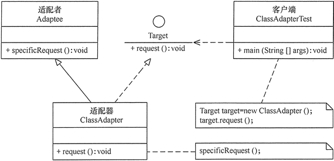

原文连接:https://www.cnblogs.com/lee0527/p/11907777.html
适配器模式
前言
在现实生活中，经常出现两个对象因接口不兼容而不能在一起工作的实例，这时需要第三者进行适配。例如，讲中文的人同讲英文的人对话时需要一个翻译，用直流电的笔记本电脑接交流电源时需要一个电源适配器，用计算机访问照相机的 SD 内存卡时需要一个读卡器等。
在软件设计中也可能出现：需要开发的具有某种业务功能的组件在现有的组件库中已经存在，但它们与当前系统的接口规范不兼容，如果重新开发这些组件成本又很高，这时用适配器模式能很好地解决这些问题。
什么是适配器模式
适配器模式(Adapter Pattern)：将一个接口转换成客户希望的另一个接口，使接口不兼容的那些类可以一起工作，其别名为包装器(Wrapper)。适配器模式既可以作为类结构型模式，也可以作为对象结构型模式。
在适配器模式中，我们通过增加一个新的适配器类来解决接口不兼容的问题，使得原本没有任何关系的类可以协同工作。
根据适配器类与适配者类的关系不同，适配器模式可分为对象适配器和类适配器两种，在对象适配器模式中，适配器与适配者之间是关联关系；在类适配器模式中，适配器与适配者之间是继承（或实现）关系。
主要角色
适配器模式（Adapter）包含以下主要角色。
- 目标（Target）接口：当前系统业务所期待的接口，它可以是抽象类或接口。
- 适配者（Adaptee）类：它是被访问和适配的现存组件库中的组件接口。
- 适配器（Adapter）类：它是一个转换器，通过继承或引用适配者的对象，把适配者接口转换成目标接口，让客户按目标接口的格式访问适配者。
类适配器模式
类适配器模式的结构图如下图所示

类适配器模式示例代码：
我们可以举一个手机充电器的例子，一般手机充电的额定电压是5V，然而家用电电压是220V。这时候手机充电器就起到了一个适配器的作用，将220V的电压转成5V的电压。
创建目标(Target)接口类即手机需要的额定电压5V类
public interface Voltage5V {
public int outPut5V();
}创建适配者(Adaptee)类即家用电压220V类，这个类就是需要被适配器适配的类。
public class Voltage220V {
public int outPut220V(){
int Voltage = 220;
return Voltage;
}
}创建适配器(Adapter)类
public class VoltageAdapter extends Voltage220V implements Voltage5V {
public int outPut5V() {
int v = this.outPut220V();
//假设这里进行了电压适配
v = 5;
return v;
}
}创建手机类
public class Phone {
public void charging(Voltage5V v){
if (v.outPut5V()==5){
System.out.println("电压为5V，可以充电！");
}else{
System.out.println("电压不匹配");
}
}
}测试类
public class Client {
public static void main(String[] args) {
Phone phone = new Phone();
phone.charging(new VoltageAdapter());
}
}
/**
电压为5V，可以充电！
*/对象适配器模式
对象适配器模式和类适配器模式大同小异，只是适配器类不再是继承适配者类而是聚合了适配者类
对象适配器模式的结构图如下图所示

将上面的例子改为对象适配器模式
只需要修改适配器类即可
public class VoltageAdapter implements Voltage5V {
private Voltage220V voltage220V;
public VoltageAdapter(Voltage220V v){
voltage220V = v;
}
public int outPut5V() {
if (null!=voltage220V) {
int v = voltage220V.outPut220V();
//假设这里进行了电压适配
v = 5;
return v;
}else{
throw new RuntimeException();
}
}
}缺省适配器模式
缺省适配器模式(Default Adapter Pattern)：当不需要实现一个接口所提供的所有方法时，可先设计一个抽象类实现该接口，并为接口中每个方法提供一个默认实现（空方法），那么该抽象类的子类可以选择性地覆盖父类的某些方法来实现需求，它适用于不想使用一个接口中的所有方法的情况，又称为单接口适配器模式。缺省适配器模式是适配器模式的一种变体，其应用也较为广泛。